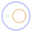

A playground for thought
The playable browser demo
Draw a thought.
See what follows.
A quiet place to explore the possibilities of visual logic, inspired by C. S. Peirce’s existential graphs.
Preparing the sheet…
Start with a discovery, or make the sheet your own.
Best with a keyboard and mouse or trackpad.
Your progress stays in this browser.
A letter. A circle. A world of possibilities.